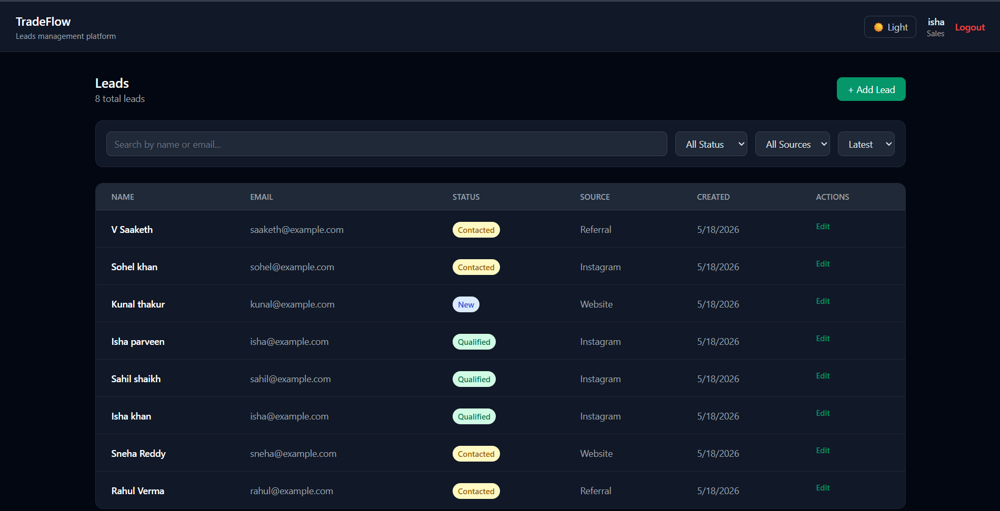

Real-time workflow manager and transaction logging platform

Trading desks and logic operations process high-frequency transaction files. Standard web application models require page refreshes or polling loops to synchronize state changes, creating delays that are unacceptable for live audit operations. Brokers need sub-second updates on trade logs, order queues, and progress timelines.
TradeFlow resolves this by establishing persistent, duplex WebSocket connections. It synchronizes transaction updates, alerts state transitions, and pushes data mutations instantly across all connected dashboard terminals.
Trades commit through transactional API routes, triggering broadcast events over Socket.io servers before writing to persistent MongoDB database entries.
Broker confirms transaction
Throttled event queues
Database insert batching
Real-time charts update
This layout prevents UI thread blocking, allowing brokers to manage long order queues without experiencing dashboard page lags.
Optimized for real-time monitoring and historical auditing of high-frequency records.
High concurrent transaction traffic during busy market hours can flood WebSocket channels, causing browser memory lag and locking rendering threads.
Processing hundreds of parallel transaction events per second caused the React dashboard to trigger non-stop re-renders, freezing browser threads and dropping frames.
We implemented a middle-tier buffer queue. Instead of broadcasting events to clients instantly, Socket.io broadcasts aggregated state changes in 100ms batches. Similarly, database write operations are queued and committed using MongoDB `bulkWrite` execution blocks, reducing network traffic and ensuring dashboard UI updates remain smooth.
The updated architecture handles high-frequency traffic periods with minimal latency and high resource stability.